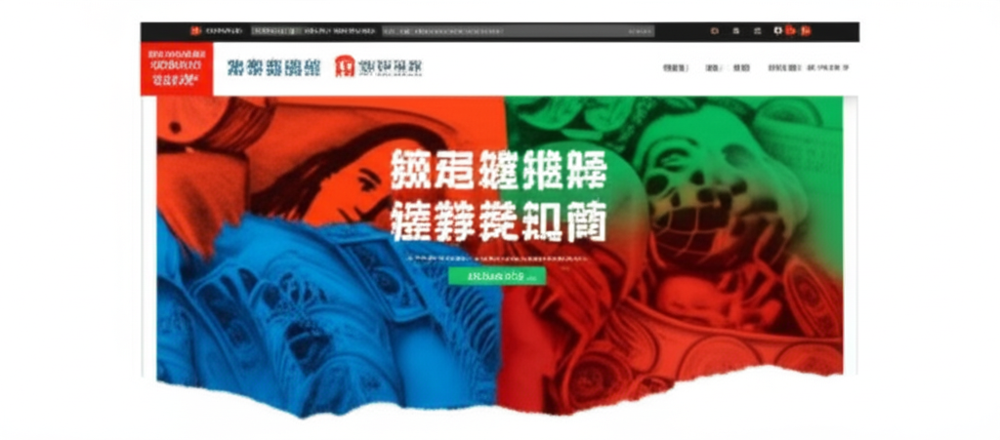

# 近期健康與體重管理新聞摘要
## 引言
近期，健康與體重管理相關議題受到廣泛關注。從國家政策、醫學研究到民眾生活，各方面都顯示出對健康體重管理的重視。本文將整理近期新聞，聚焦於體重管理意識、相關活動、以及一些健康領域的新動態，以呈現當前健康與體重管理領域的趨勢。
## 主體內容
### 第一點：國家層面的體重管理推廣與政策
國家中醫藥管理局及國家衛生健康委均積極推廣體重管理。新聞顯示，國家衛生健康委發布了《體重管理指導原則（2024年版）》，強調成人超重率和肥胖率問題，體現了國家層面對體重管理的重視。此外，全國愛衛會也將健康體重管理行動納入重點工作。這些政策和指導原則的推出，有助於提高民眾對健康體重管理的認知，並為相關工作的開展提供依據。
### 第二點：各地區的體重管理活動與倡議
各地區也積極響應國家號召，展開了多樣化的體重管理活動。例如，桓台縣荊家鎮衛生院在鄉村推廣體重管理知識，通過平衡膳食寶塔模型，向居民講解科學體重管理理念。中國健康管理協會也舉辦體重管理先導論壇，聚焦關鍵技術，共同探討運營新模式。這些活動的舉辦，有助於將體重管理知識普及到基層，提高民眾的健康意識。
### 第三點：健康領域的其他相關新聞
除了體重管理外，其他健康領域的新聞也值得關注。早安健康NEWS報導了近年重金屬食安新聞頻傳，提醒民眾注意飲食安全。輔英科大在大專運動會上奪金，展示了運動與健康產業的跨域資源整合。這些新聞反映了民眾對整體健康的高度關注，涵蓋飲食、運動等多個方面。
## 結論
總體而言，近期新聞顯示，健康與體重管理已成為社會各界關注的焦點。從國家政策的引導，到各地區的積極響應，以及相關產業的蓬勃發展，都體現了健康體重管理的重要性。隨著人們健康意識的提高，相信未來將會有更多創新性的方法和措施，助力民眾實現健康體重的目標。